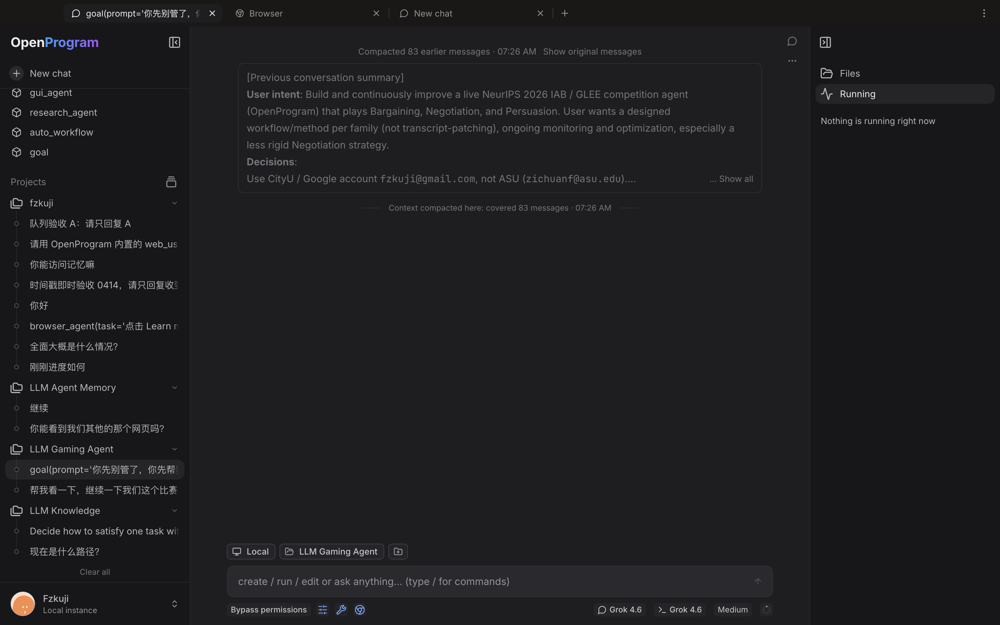

OpenProgram Docs
OpenProgram Docs
Web UI#
The browser interface covers all of OpenProgram's daily operations: chatting, managing functions and programs, configuring providers and MCP, browsing memory and projects. This page walks through each page by route and describes the chat page in detail.
Start it:
openprogram web
Open http://localhost:18100 in a browser. The page is a static export served by the local FastAPI worker itself — /api, /ws, and the UI all live on the same single port (18100 by default). All data comes from the worker; sessions are shared with the terminal TUI and CLI one-shots, see the interfaces overview. To change the port, use openprogram ports --port.

Chat page (/chat, /s/<session-id>)#
/chat is the main chat interface; /s/<session-id> is a direct link to a single session. Switching sessions does not reload the page, and the WebSocket connection stays open.
Message streaming#
Replies stream in over WebSocket: a placeholder reply appears immediately after sending, and text, thinking, and tool-call blocks render incrementally in arrival order. When several agents write into one session, each assistant message carries the producing agent's avatar and name.
Collapsible thinking#
The model's thinking process renders as a collapsible block, collapsed by default. While streaming, only the latest line shows; click to expand the full content.
Function-call timeline#
Function and tool calls within each reply turn render as an expandable execution timeline: one row per step, with arguments, output, errors, and duration for each function call. Nested calls display recursively as a context tree, and subagents are steps in the timeline too. Clicking a step opens the execution detail panel in the right sidebar. Functions run manually from the /functions page's Run dialog use the same timeline rendering.
Attachments#
Drag and drop images or text files onto the input box (pasting works too); they are attached to the next message you send.
Session branches and the DAG view#
Session history is stored as a DAG, not a flat list:
- The branch menu in the top bar lists all branches of the current session, with checkout, rename, and delete.
- The History view in the right sidebar shows a live mini-DAG of the session: one node per message or function call, colored by branch, with merge and attach operations appearing as nodes of their own. Click a node to collapse or expand its subtree (or jump the chat to that step); double-click a node or edge to check out that branch.
- The Branches panel above the mini-DAG lists branches with a running marker on active ones, and supports multi-select merge — equal merge into a fresh tip, or merge in place into a chosen base branch — as well as attaching branches from another session (cross-session attach).
- Multiple versions of the same message switch via a
< N/M >selector — it only moves the displayed position, never deletes history.
Rewind#
Each message's action menu has "Rewind to here": it truly rolls the session back to that message, and the undone user input is pre-filled back into the input box for editing and resending. The /rewind slash command in the input box is the same feature.
Other pages#
| Route | Purpose |
|---|---|
/chats |
Session history list: search, filter by time and channel, create new sessions |
/functions |
Function directory: favorites, custom folders (drag to organize), search and sort, grid / list views |
/programs |
Agentic program directory: LLM programs with their own UIs, launch and run directly |
/skills |
SKILL.md management: browse installed skills, discover new ones, create skills; each skill has a detail page |
/plugins |
Plugin management: installed / marketplace / errors tabs |
/mcp |
MCP server management: add from the directory, edit configs, view per-server status |
/memory |
Persistent memory: browse and edit the wiki, journal, and core memories, with markdown and wikilink support |
/projects |
Project management: per-project permission rules, default settings, associated sessions |
/settings |
Settings: providers (models and credentials), search, general (including light/dark theme), system, usage, auth, channels |
Opening /settings directly lands on /settings/providers; see configuring models for model setup.